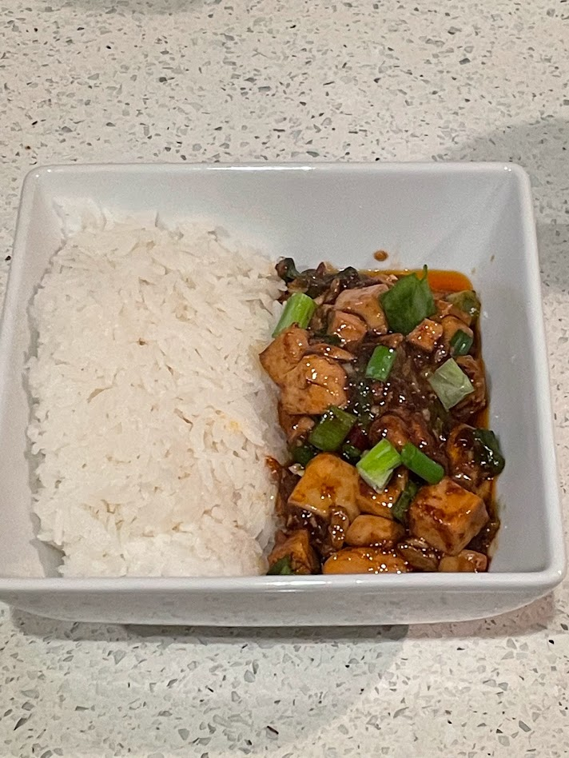

Mapo tofu
Serving size: 2 servings
Mapo tofu served alongside white rice
Ingredients
- Szechuan peppercorns, ground up (1 tsp???)
- Minced garlic (several cloves)
- Minced ginger (one thumb-sized piece)
- A tiny bit of coriander
- Whole dried red chilies
- Laoganma chili oil or chili sauce
- Vegetable oil (not necessary if you're using chili oil)
- Fermented black bean paste
- One block of silken tofu (soft tofu is an acceptable substitute)
- Soy sauce
- A small amount (1 tsp?) of corn or potato starch, dissolved in water
- Green onions (thinly bias-cut)
Instructions
Cook aromatics (except green onions) in a small amount of oil until fragrant, then add cubed tofu. This dish looks super oily when it's done, but in reality, it only requires a couple teaspoons of oil, so don't add too much. Let it cool until no longer sizzling, then pour soy sauce and the starch slurry on top and stir those in. Cooling it ensures that adding water won't make the oil splatter, and that you're able to fully stir in the corn starch before it thickens. Bring the dish back up to high heat, add green onions, and cook for another 10 minutes or so. Serve immediately once it's done.
Serving suggestion
Serve with white rice. If you're a coward, you can remove the whole dried chilis.
Notes
This is a surprisingly quick, easy, and cheap dish. I highly recommend it for college students.